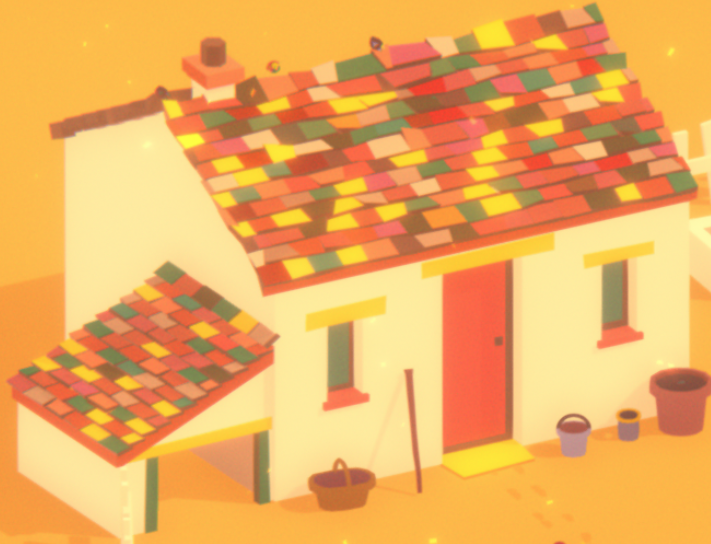
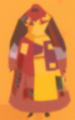
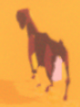

Nick Grundman's Very Professional Portfolio
Nick Grundman's Very Professional Portfolio
Nick Grundman's Very Professional Portfolio
Nick Grundman's Very Professional Portfolio
General details of the game

Sound effects: clinks of a can, water pouring, whistling, rooster crowing Music: Relaxing, simple Only controls are with the mouse, point and click The game tells you nothing other than showing what you can click on. You have to discover what everything does. Can build your own routine. I always grabbed my cup, opened the coop, and got water. After that, I watered the plant, milked the goats, and made some cheese. When the merchant came, I’d either buy some hay or try to save up for a new goat. Can go very slightly outside of the gates to get water from the well, no further Can water plant once a day, grows slightly every morning Only human other than Tikvah is the merchant, who comes in the afternoon once a day Letters show hints of the outside world… like how reportedly Tikvah’s goat cheese is being sold by some merchant in the market Merchant sells hay for one cheese, new goats for 5 cheese Merchant also brings mail that can be read Mail starts out hopeful, but gets more and more distressing each day Goats can be pet whenever, eat hay once a day, and can be milked once a day Goat milk can be turned into cheese, one per goat milk bucket Can call goats over, they don’t seem to listen Chickens can be let out of the coop in the morning and go to sleep every night Closing the coop seems pointless. Nothing can hurt my chickens Closing the gate also seems pointless. Chickens can wander outside the gate anyways and goats never leave Don’t know what the bottom right thing or the basket does Can go to sleep every night, goes into the morning If you wait too long to go to bed she goes to sleep on her own
(need to fill in earlier experiences) I ignored the merchant for a while and forgot to get enough hay. Will my goats starve? The merchant never came today. The goats are already hungry and I have no food for tomorrow. Can bury dead goats. I bought a new one with all my cheese. Chickens didn’t come out either. They haven’t come back. Crows everywhere. Can’t milk my goat. The basket is apparently to get eggs from the coop. I never got to do this though, because my chickens disappeared. A dead song bird on the ground. The merchant sprinted in much faster than usual today. I feel like I’m walking slower. “Merchant has nothing to trade.” Nothing to do. Next day, there is nothing. No objects, no goats, no crows. Everything is gray. It cuts to black, shows credits, ends.



(need to fill in)